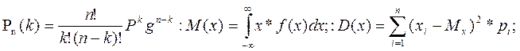
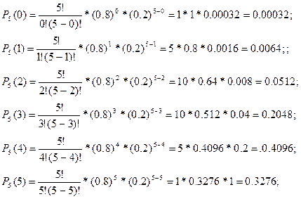
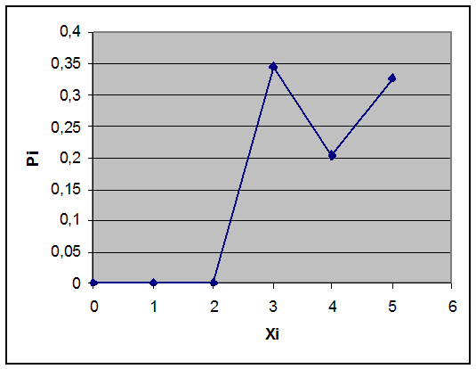

P=0,00032+0.0064+0.0512+0,2048+0,4096 +0,3276=1.46072
Математичне спів падання:
M(x)= 0*0,00032+1*0.0064+2*00512+3*0,2048+4*0,4096 +5*0,3276=3.9996;
 Дісперсія:
Дісперсія: Тема: Випадкові величини;
Мета роботи: Навчитися застосовувати випадкові величини
Прилади і обладнання: комп’ютер.
Розрахункові формули:
Хід роботи:
Завдання Скласти закон розподілу випадкової величини, що виражає число завантажених програм, якщо завантажується n програм, а імовірність завантаження кожної р.
Побудувати многокутник розподілу. Знайти функцію розподілу , математичне сподівання, дисперсію і середнє квадратичне відхилення цієї випадкової величини.
n=5; p=0,8; q=1-0,8=0,2;

Перевірка:
P=0,00032+0.0064+0.0512+0,2048+0,4096 +0,3276=1.46072
Математичне спів падання:
M(x)= 0*0,00032+1*0.0064+2*00512+3*0,2048+4*0,4096 +5*0,3276=3.9996;
Дісперсія:
Середнє квадратне відхилення:
Xi |
0 |
1 |
2 |
3 |
4 |
5 |
Pi |
0,00032 |
0.0064 |
0.0512 |
0,3456 |
0,2048 |
0.3276 |

Висновок:Виконуючи цю практичну роботу я навчився працювати з випадковими величинами